Arbeidspapirer i revisjon er den systematiske dokumentasjonen som revisorer utarbeider under revisjonsoppdraget for å støtte sine konklusjoner og oppfylle profesjonelle standarder. Disse dokumentene utgjør grunnlaget for revisjonsuttalelsen og sikrer kvalitet og sporbarhet i revisjonsprosessen.
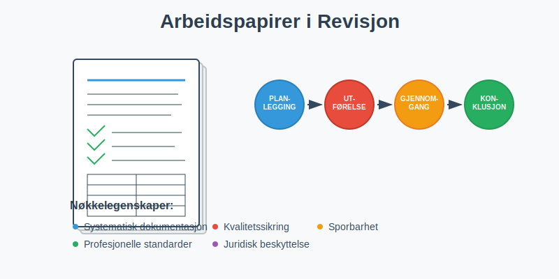
Hva er Arbeidspapirer?
Arbeidspapirer er alle dokumenter og registreringer som revisoren utarbeider eller innhenter under revisjonsoppdraget. De dokumenterer:
- Revisjonsplanlegging: Strategi, risikovurderinger og tilnærming
- Utførte prosedyrer: Detaljerte beskrivelser av revisjonshandlinger
- Innhentede bevis: Dokumentasjon som støtter revisjonskonklusjonene
- Konklusjoner: Revisorens vurderinger og beslutninger
Arbeidspapirene må være tilstrekkelige og hensiktsmessige til å støtte revisjonsuttalelsen og gjøre det mulig for en erfaren revisor å forstå arbeidet som er utført.
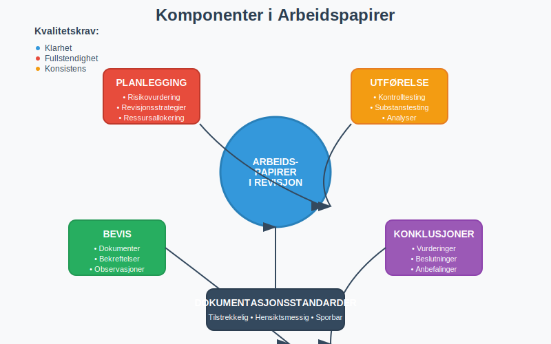
Formål med Arbeidspapirer
Primære Formål
Dokumentasjon av Revisjonsarbeid
- Bevis for utført arbeid: Viser at revisjonen er utført i henhold til standarder
- Støtte for konklusjoner: Dokumenterer grunnlaget for revisjonsuttalelsen
- Kvalitetssikring: Muliggjør gjennomgang og kontroll av arbeidet
Kommunikasjon og Koordinering
- Teamarbeid: Koordinerer arbeid mellom revisjonsmedarbeidere
- Gjennomgang: Muliggjør effektiv gjennomgang av arbeidet
- Kunnskapsoverføring: Bevarer kunnskap for fremtidige oppdrag
Sekundære Formål
Juridisk Beskyttelse
- Forsvar ved søksmål: Dokumenterer at revisjonen er utført forsvarlig
- Regulatorisk etterlevelse: Viser overholdelse av lover og standarder
- Forsikringsformål: Støtter krav ved profesjonsansvarsforsikring
Effektivitet og Kontinuitet
- Planlegging av fremtidige revisjoner: Gir grunnlag for neste års revisjon
- Opplæring: Brukes til opplæring av nye medarbeidere
- Metodeutvikling: Bidrar til forbedring av revisjonsprosesser
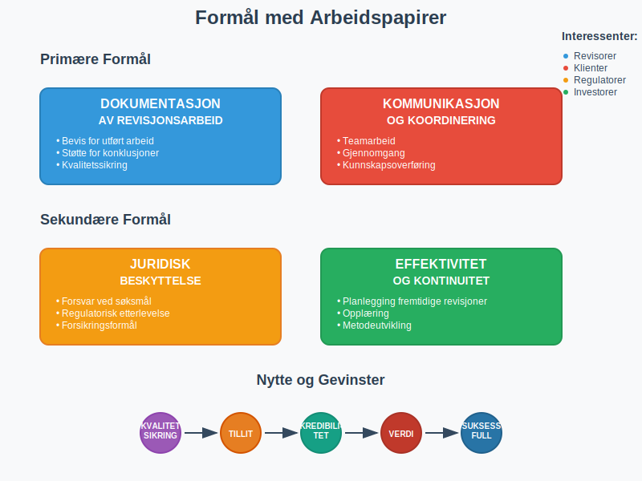
Krav til Arbeidspapirer
Lovmessige Krav
Revisorloven
Revisorloven stiller krav om at revisorer skal:
- Dokumentere revisjonsarbeidet: Tilstrekkelig dokumentasjon av alle vesentlige forhold
- Oppbevare dokumenter: Minimum 10 år etter avsluttet oppdrag
- Sikre konfidensialitet: Beskytte klientinformasjon
International Standards on Auditing (ISA)
ISA 230 “Revisjonsdokumentasjon” krever:
- Tilstrekkelig dokumentasjon: Må støtte revisjonsuttalelsen
- Rettidig ferdigstillelse: Innen 60 dager etter revisjonsberetningens dato
- Sporbarhet: Klar sammenheng mellom arbeid og konklusjoner
Kvalitetskrav
Klarhet og Forståelighet
- Tydelig språk: Enkelt å forstå for erfarne revisorer
- Logisk struktur: Systematisk oppbygning av dokumentasjonen
- Fullstendighet: Alle vesentlige forhold må være dokumentert
Sporbarhet og Referanser
- Kryssreferanser: Klare henvisninger mellom dokumenter
- Kildehenvisninger: Referanser til underliggende dokumenter
- Konklusjonsspor: Tydelig sammenheng mellom bevis og konklusjoner
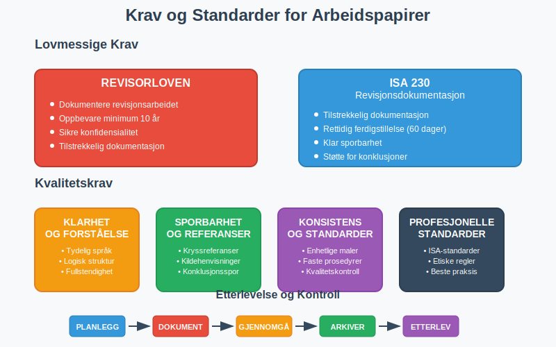
Struktur og Organisering
Hovedkategorier
Permanente Filer
Inneholder informasjon som er relevant over flere år:
| Kategori | Innhold | Eksempler |
|---|---|---|
| Selskapsinfo | Grunnleggende selskapsdata | Vedtekter, organisasjonskart, eierstruktur |
| Avtaler | Langsiktige kontrakter | Leieavtaler, låneavtaler, forsikringer |
| Regnskapsrutiner | Interne kontrollsystemer | Regnskapsmanualer, autorisasjonsmatriser |
| Tidligere revisjoner | Historisk informasjon | Tidligere års konklusjoner, påpekte forhold |
Løpende Filer
Inneholder informasjon spesifikk for inneværende års revisjon:
| Kategori | Innhold | Eksempler |
|---|---|---|
| Planlegging | Revisjonsplanlegging | Risikovurderinger, revisjonsstrategier |
| Utførelse | Revisjonshandlinger | Tester, analyser, bekreftelser |
| Gjennomgang | Kvalitetskontroll | Gjennomgangsnotater, oppfølging |
| Avslutning | Konklusjoner | Sammendrag, revisjonsuttalelse |
Organisering av Arbeidspapirer
Numerisk System
- Hovedseksjoner: 100-serien (planlegging), 200-serien (utførelse)
- Underseksjoner: 110 (risikovurdering), 120 (revisjonsplan)
- Individuelle papirer: 110.1, 110.2, etc.
Alfabetisk System
- A-serien: Administrative forhold
- B-serien: Balanseposter
- R-serien: Resultatposter
- S-serien: Sammendrag og konklusjoner
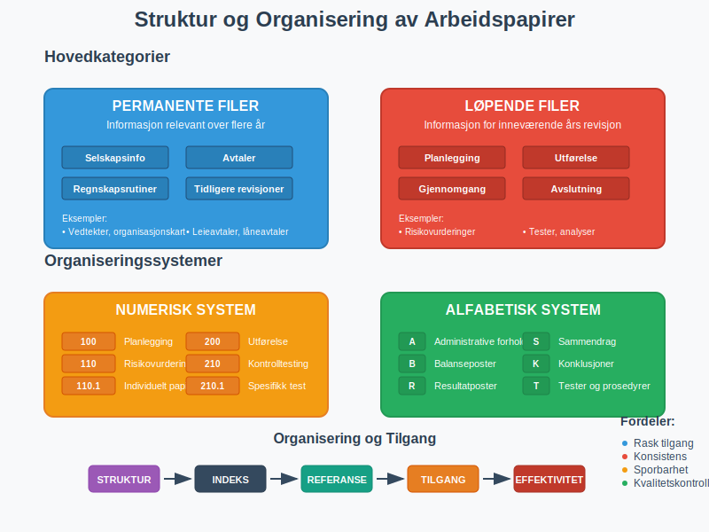
Innhold i Arbeidspapirer
Planleggingsdokumentasjon
Risikovurdering
- Forretningsrisiko: Analyse av klientens bransje og marked
- Revisjonsrisiko: Vurdering av risiko for vesentlig feilinformasjon
- Kontrollrisiko: Evaluering av interne kontroller
- Oppdagelsesrisiko: Planlagt nivå for substanstesting
Revisjonsplan
- Revisjonsstrategier: Tilnærming for hver regnskapsområde
- Ressursallokering: Tidsbudsjett og personalressurser
- Tidsplan: Milepæler og frister for revisjonsarbeidet
- Spesialområder: Planlegging for komplekse eller risikofylte områder
Utførelsesdokumentasjon
Tester av Kontroller
- Kontrollbeskrivelser: Dokumentasjon av klientens kontroller
- Testprosedyrer: Detaljerte beskrivelser av utførte tester
- Testresultater: Funn og konklusjoner fra kontrolltesting
- Avvik og oppfølging: Identifiserte svakheter og korrigerende tiltak. Systematisk avvikshåndtering sikrer at alle avvik dokumenteres, analyseres og følges opp på en strukturert måte.
Substanstester
- Utvalgsmetoder: Beskrivelse av hvordan utvalg er foretatt
- Testprosedyrer: Detaljerte beskrivelser av substanstester
- Testresultater: Funn, avvik og konklusjoner
- Ekstrapolering: Vurdering av funnenes betydning for populasjonen
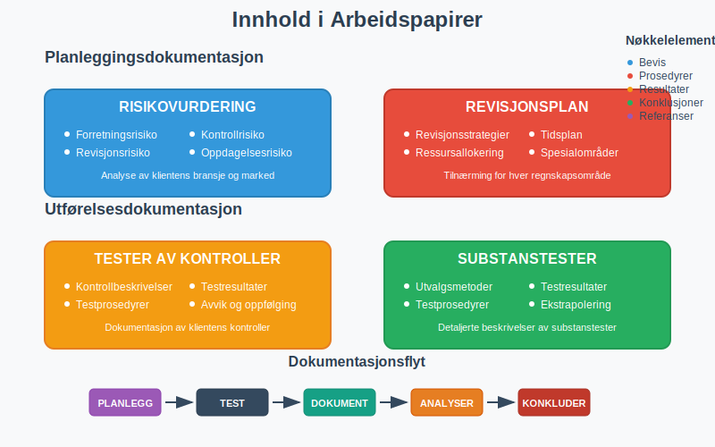
Digitale Arbeidspapirer
Fordeler med Digitalisering
Effektivitet
- Automatisering: Automatiske beregninger og sammenstillinger
- Søkefunksjonalitet: Rask tilgang til informasjon
- Standardisering: Konsistente maler og prosedyrer
- Integrasjon: Kobling til klientens systemer
Kvalitet
- Konsistens: Standardiserte arbeidsmetoder
- Sporbarhet: Automatisk logging av endringer
- Gjennomgang: Elektroniske gjennomgangsverktøy
- Arkivering: Sikker og strukturert oppbevaring
Utfordringer og Løsninger
Tekniske Utfordringer
- Systemkompatibilitet: Sikre at systemer fungerer sammen
- Datasikkerhet: Beskytte sensitiv klientinformasjon
- Backup og gjenoppretting: Sikre mot datatap
- Oppdateringer: Holde systemer oppdaterte
Organisatoriske Utfordringer
- Opplæring: Sikre at personalet behersker systemene
- Standarder: Utvikle konsistente arbeidsmetoder
- Kvalitetskontroll: Opprettholde kvalitet i digitale prosesser
- Endringsledelse: Håndtere overgangen fra papirbaserte systemer
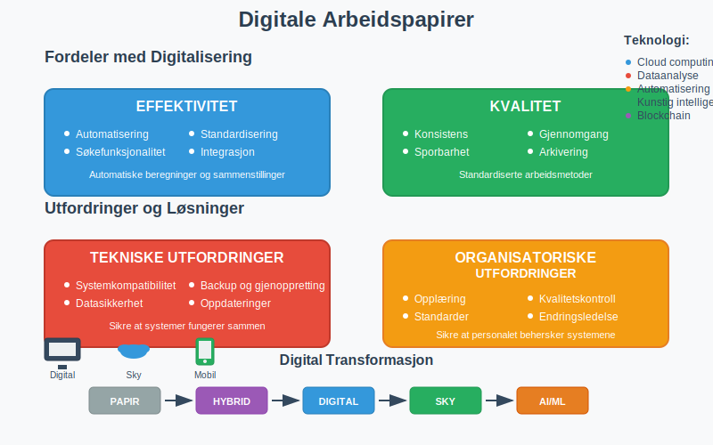
Gjennomgang og Kvalitetskontroll
Gjennomgangsprosess
Nivåer av Gjennomgang
- Selvgjennomgang: Revisor gjennomgår eget arbeid
- Kollegagjennomgang: Erfaren kollega gjennomgår arbeidet
- Partnergjennomgang: Partner gjennomgår kritiske områder
- Kvalitetskontrollgjennomgang: Uavhengig gjennomgang av høyrisikoklienter
Gjennomgangsfokus
- Tilstrekkelighet: Er dokumentasjonen tilstrekkelig?
- Hensiktsmessighet: Støtter dokumentasjonen konklusjonene?
- Konsistens: Er arbeidet konsistent med revisjonsplanen?
- Standarder: Er profesjonelle standarder fulgt?
Kvalitetsindikatorer
Kvantitative Mål
- Dokumentasjonsgrad: Andel av planlagte prosedyrer som er dokumentert
- Gjennomgangstid: Tid brukt på gjennomgang av arbeidspapirer
- Avviksrate: Antall identifiserte mangler eller feil
- Ferdigstillelsestid: Tid fra revisjonsavslutning til ferdig dokumentasjon
Kvalitative Vurderinger
- Klarhet: Er dokumentasjonen klar og forståelig?
- Relevans: Er dokumentasjonen relevant for konklusjonene?
- Objektivitet: Er vurderingene objektive og balanserte?
- Profesjonalitet: Oppfyller dokumentasjonen profesjonelle standarder?
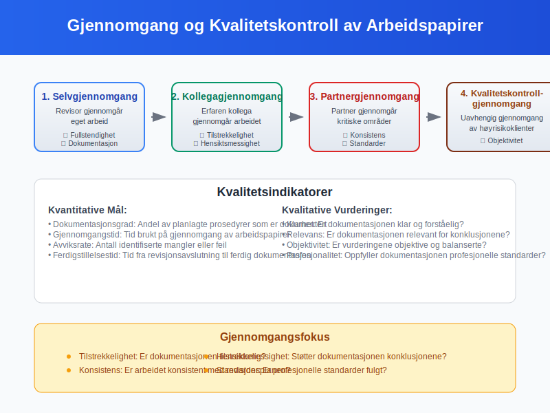
Oppbevaring og Arkivering
Oppbevaringsperiode
Lovmessige Krav
- Minimum 10 år: Krav i henhold til revisorloven
- Regnskapsår + 10: Regnes fra regnskapsårets slutt
- Spesielle forhold: Lengre oppbevaring ved tvister eller undersøkelser
- Elektronisk arkivering: Samme krav som for fysiske dokumenter
Praktiske Hensyn
- Tilgjengelighet: Sikre at dokumenter kan hentes frem ved behov
- Lesbarhet: Opprettholde dokumentenes lesbarhet over tid
- Sikkerhet: Beskytte mot tap, skade eller uautorisert tilgang
- Kostnader: Balansere oppbevaringskostnader mot nytte
Arkiveringssystemer
Fysisk Arkivering
- Organisering: Systematisk filing og merking
- Lagring: Sikre og tørre oppbevaringsforhold
- Tilgangskontroll: Begrense tilgang til autorisert personell
- Kassasjon: Sikker destruksjon etter oppbevaringsperioden
Elektronisk Arkivering
- Filformater: Bruk av standardiserte og holdbare formater
- Metadata: Systematisk registrering av dokumentegenskaper
- Backup: Regelmessig sikkerhetskopi til separate lokasjoner
- Migrering: Overføring til nye systemer ved teknologiskifte
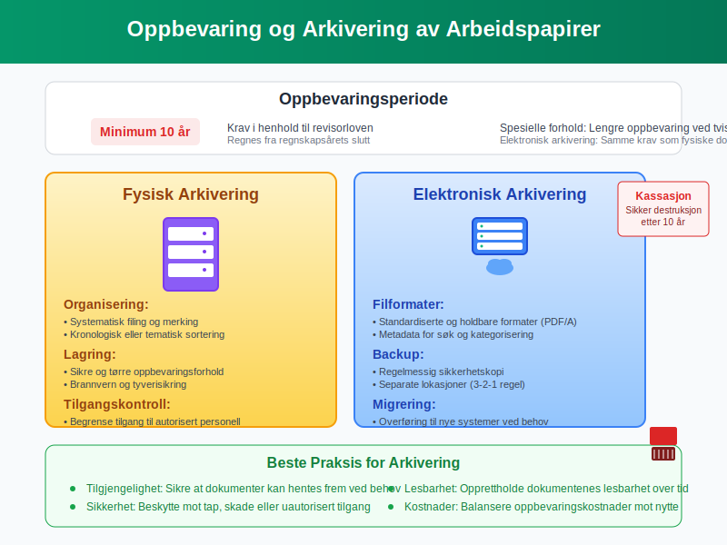
Beste Praksis
For Revisorer
Under Revisjonsarbeidet
- Dokumenter løpende: Ikke vent til slutten med dokumentasjon
- Vær spesifikk: Beskriv nøyaktig hva som er gjort og hvorfor
- Bruk standarder: Følg etablerte maler og prosedyrer
- Kryssreferanser: Sikre klar sammenheng mellom dokumenter
Ved Gjennomgang
- Vær kritisk: Still spørsmål ved ufullstendig dokumentasjon
- Fokuser på risiko: Prioriter gjennomgang av høyrisikoområder
- Dokumenter gjennomgang: Registrer gjennomgangsnotater og oppfølging
- Følg opp: Sikre at identifiserte mangler blir rettet
For Bedrifter som Revideres
Forberedelse til Revisjon
- Organiser dokumenter: Ha dokumentasjon klar og tilgjengelig
- Beskriv prosesser: Dokumenter regnskaps- og kontrollprosesser
- Identifiser endringer: Informer om vesentlige endringer siden forrige år
- Tilgjengelig personell: Sikre at nøkkelpersoner er tilgjengelige
Under Revisjonen
- Samarbeid aktivt: Gi rask tilgang til forespurt informasjon
- Vær åpen: Diskuter utfordringer og bekymringer åpent
- Følg opp: Implementer anbefalte forbedringer
- Lær: Bruk revisjonen som en læringsmulighet
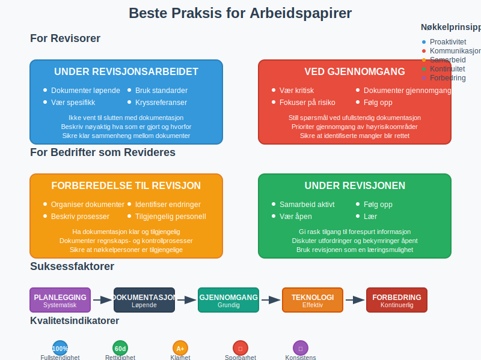
Utfordringer og Løsninger
Vanlige Utfordringer
Tidsmangel
- Problem: Ikke nok tid til grundig dokumentasjon
- Løsning: Planlegg dokumentasjon som del av revisjonsarbeidet
- Verktøy: Bruk standardiserte maler og automatisering
- Kultur: Skape forståelse for dokumentasjonens viktighet
Kompleksitet
- Problem: Vanskelig å dokumentere komplekse vurderinger
- Løsning: Bryt ned komplekse områder i mindre deler
- Struktur: Bruk systematiske tilnærminger og rammeverk
- Ekspertise: Involver spesialister ved behov
Teknologi
- Problem: Utfordringer med digitale verktøy og systemer
- Løsning: Invester i opplæring og teknisk støtte
- Standarder: Etabler klare retningslinjer for teknologibruk
- Oppgradering: Hold systemer oppdaterte og funksjonelle
Fremtidige Utviklingstrender
Kunstig Intelligens
- Automatisering: AI kan automatisere rutineoppgaver i dokumentasjon
- Analyse: Maskinlæring kan identifisere mønstre og avvik
- Kvalitet: AI kan bidra til konsistent dokumentasjonskvalitet
- Utfordringer: Behov for menneskelig vurdering og kontroll
Dataanalyse
- Store datamengder: Mulighet for analyse av komplette datasett
- Visualisering: Bedre presentasjon av analyseresultater
- Kontinuerlig revisjon: Mulighet for løpende overvåking
- Kompetanse: Behov for nye ferdigheter hos revisorer
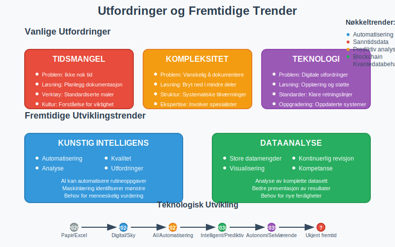
Konklusjon
Arbeidspapirer i revisjon er fundamentet for kvalitetsrevisjon og profesjonell praksis. De sikrer at revisjonsarbeidet er:
- Dokumentert: Tilstrekkelig bevis for konklusjoner
- Sporbart: Klar sammenheng mellom arbeid og uttalelser
- Kvalitetssikret: Grunnlag for gjennomgang og kontroll
- Forsvarlig: Beskyttelse mot juridiske og profesjonelle risikoer
Suksessfaktorer for gode arbeidspapirer:
- Systematisk tilnærming og konsistent struktur
- Løpende dokumentasjon under revisjonsarbeidet
- Grundig gjennomgang og kvalitetskontroll
- Effektiv bruk av teknologi og digitale verktøy
- Kontinuerlig forbedring av prosesser og metoder
Ved å følge etablerte standarder og beste praksis kan revisorer sikre at arbeidspapirene oppfyller sitt formål som grunnlag for pålitelige revisjonsuttalelser og bidrar til tilliten til regnskapsrapportering i norsk næringsliv.